Re-contabilizar Datos Contables de Cuentas de Ganancia y Perdida¶
Ubique y seleccione en el menú de ADempiere, la carpeta “Análisis de Desempeño”, luego seleccione la ventana “Asientos Contables”.
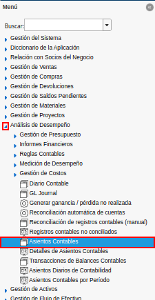
Imagen 1. Menú de ADempiere
Una vez visualizada la ventana “Asientos Contables”, se procede a ubicar el registro del asiento contable que requiere actualizar. Esta búsqueda se puede realizar seleccionando el filtro “Hecho Contable” e ingresando el “ID” del mismo. Como ejemplo se tiene el hecho contable “5726493”.
Note
De igual manera, se puede realizar la búsqueda utilizando los filtros “Cuenta”, “Fecha Contable”, “Fecha de la Transacción”, entre otros que van a depender de lo que requiera el usuario en su momento.
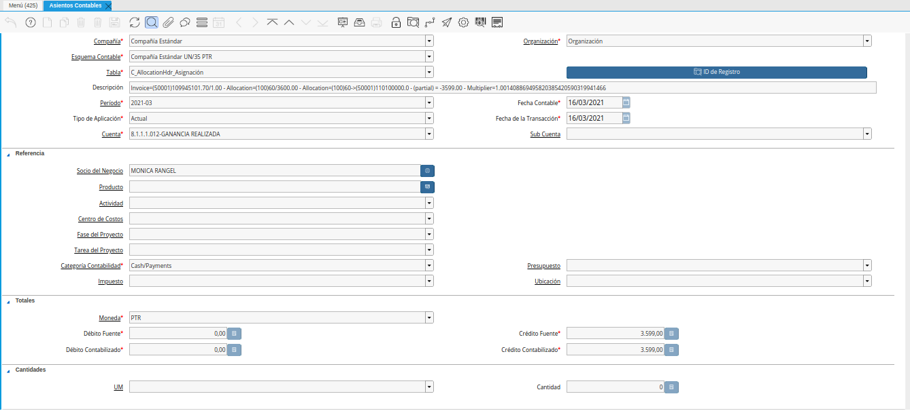
Imagen 2. Registro de Hecho Contable
Luego de ubicar el hecho contable, se debe seleccionar la opción “ID de Registro”, para acercar de manera rápida el registro de la asignación en la ventana “Consulta de Asignación”.
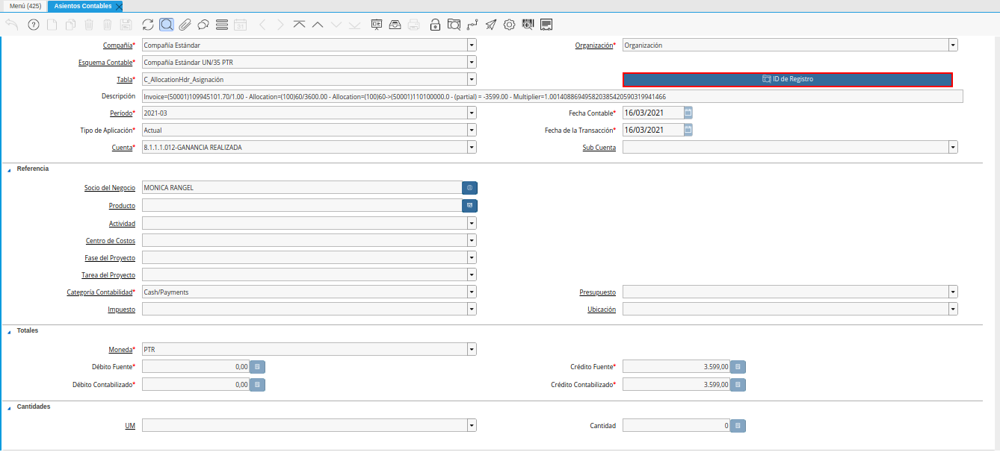
Imagen 3. Asignación entre Factura y Cobro
Una vez en el registro de la asignación entre el cobro y la factura, se debe seleccionar la pestaña “Asignaciones” de la ventana “Consulta de Asignación”, para acceder desde allí al registro de la factura asociada a dicha asignación.
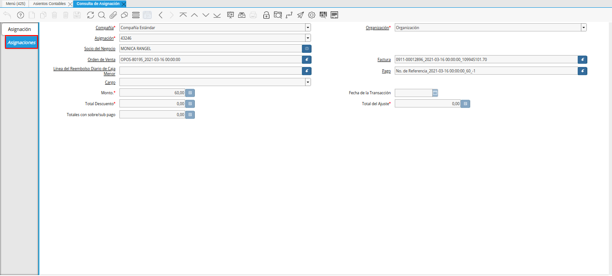
Imagen 4. Pestaña Asignaciones
Para acercar de manera rápida el registro de la factura asociada, se debe hacer clic contrario sobre el campo “Factura” y seleccionar la opción “Acercar”.
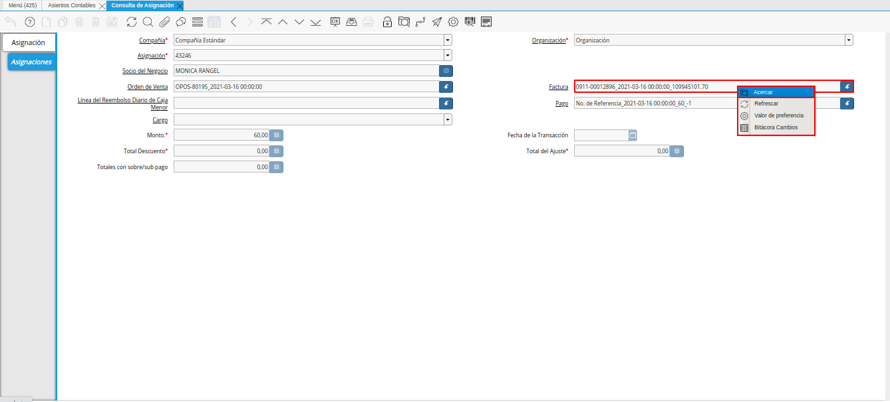
Imagen 5. Opción Acercar del campo Factura
Podrá visualizar la ventana “Documentos por Cobrar” con el registro de la factura asociada.
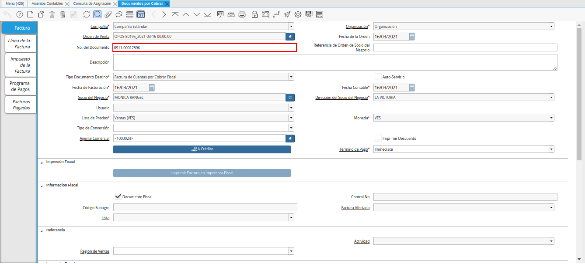
Imagen 6. Registro de Factura
En la misma se debe verificar el tipo de conversión que esta posee, ya que este debe ser a la tasa del día de la factura. Es decir, si la factura tiene fecha “16/03/2021”, el tipo de conversión de la factura debe ser “BCV 16/03/2021”. De no tener el tipo de conversión indicado antes, se debe crear un tipo de conversión y su respectiva tasa de cambio, donde la fecha de inicio de la tasa debe ser la fecha de la factura y la fecha final de la tasa debe ser la fecha que tiene el último cobro realizado en relación a dicha factura. Ejemplo:
Tipo de conversión “BCV 16/03/2021”
Tasa de cambio “1.835.000,0”
Válido Desde “16/03/2021”
Válido Hasta “16/03/2021”
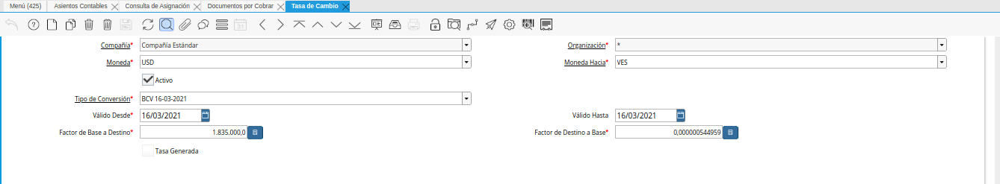
Imagen 7. Tipo de Conversión y Tasa de Cambio a la Fecha de la Factura
Cuando se tenga el tipo de conversión y tasa de cambio a la fecha de la factura, se debe cambiar el valor que se encuentra en el campo “Tipo de Conversión” de la factura y seleccionar el tipo de conversión creado. Continuando con el ejemplo, el tipo de conversión a seleccionar sería “BCV 16/03/2021”.
Note
Si el tipo de conversión no puede ser visualizado, debe hacer clic contario sobre el campo y selecionar la opción “Refrescar”, para actualizar los valores que muestra el mismo.
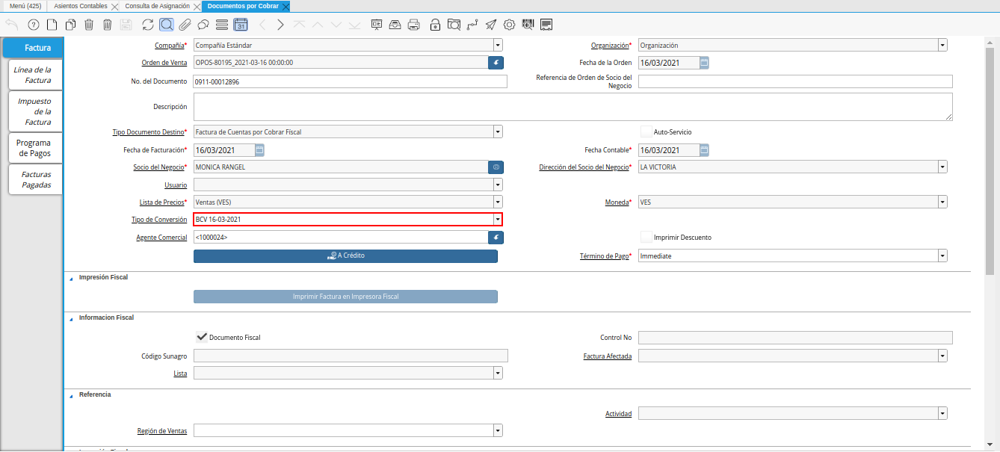
Imagen 8. Nuevo Tipo de Conversión
Luego se debe guardar el registro y seleccionar la pestaña “Facturas Pagadas” de la ventana “Documentos por Cobrar”, para visualizar los cobros asociados a la factura.
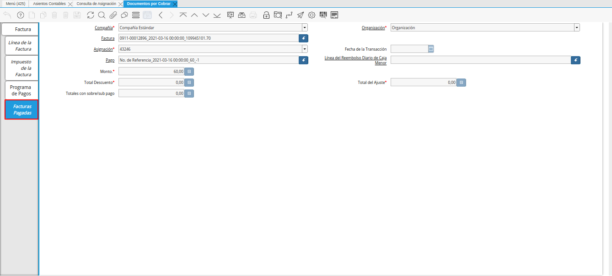
Imagen 9. Pestaña Facturas Pagadas
Se debe copiar el valor que se encuentra en el campo “Pago” y ubicarlo en la ventana “Caja”.
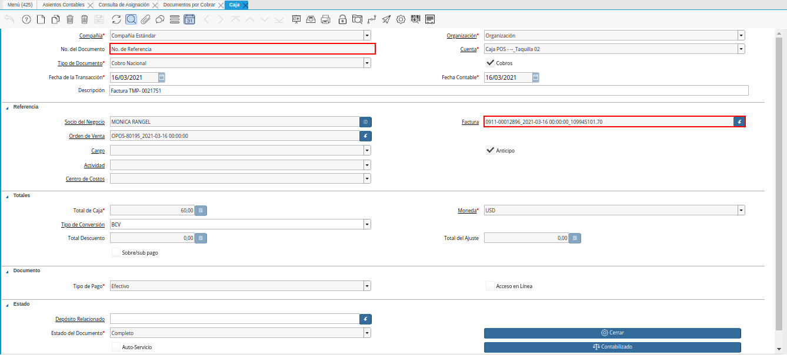
Imagen 10. Registro del Cobro
Una vez ubicado el registro del cobro asociado a la factura, se debe cambiar el tipo de conversión que tiene el mismo y asociar el tipo de conversión creado para luego guardar el registro.
Note
Si el tipo de conversión no puede ser visualizado, debe hacer clic contario sobre el campo y selecionar la opción “Refrescar”, para actualizar los valores que muestra el mismo.
Imagen 11. Nuevo Tipo de Conversión
El cobro debe ser re-contabilizado, para ello se debe seleccionar la opción “Contabilizado” ubicada en la parte inferior derecha del cobro.
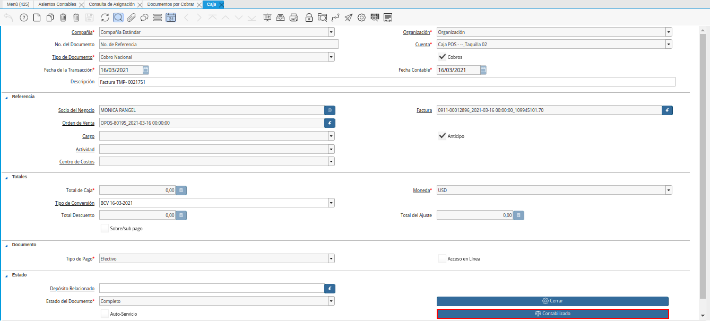
Imagen 12. Opción Contabilizado del Cobro
Al visualizar la ventana “Información Contable”, se activa el check “Forzar” y se selecciona la opción “Re-Contabilizar”.
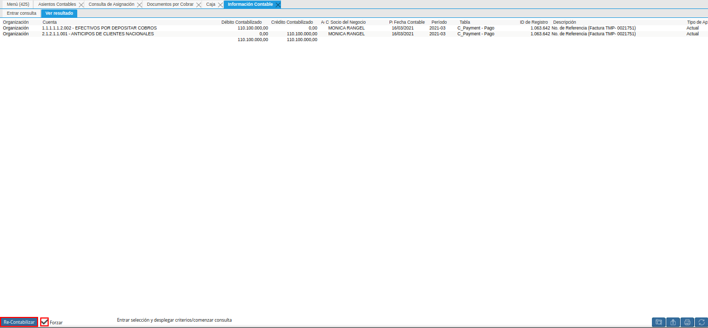
Imagen 13. Check Forzar y Opción Re-Contabilizar Cobro
Note
En la ventana emergente de confirmación, se debe seleccionar la opción “OK” para ejecutar el proceso.
Finalmente, se debe ubicar de nuevo el registro de la asignación entre el cobro y la factura en la ventana “Consulta de Asignación”, en la cual se debe seleccionar la pestaña principal “Asignación” y la opción “Contabilizado”.
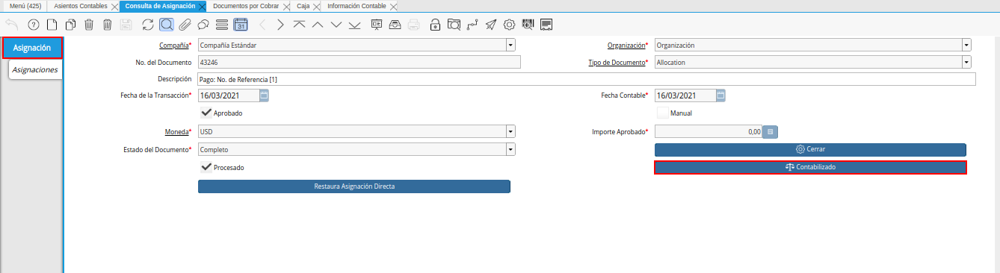
Imagen 14. Pestaña Principal Asignación de la Ventana Consulta de Asignación
Luego de visualizar la ventana “Información Contable”, se debe activar el check “Forzar” y seleccionar la opción “Re-Contabilizar”.
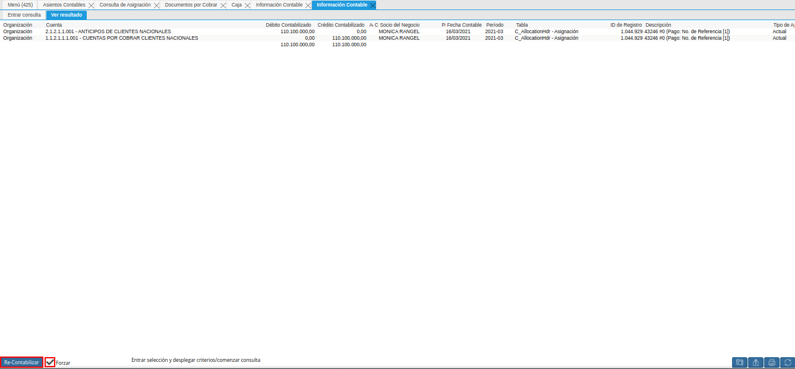
Imagen 15. Check Forzar y Opción Re-Contabilizar Asignación
Este proceso se debe repetir por cada uno de los cobros que tenga asociado la factura.
Por último, se ubica nuevamente el hecho contable de la ventana “Asientos Contables” y se selecciona el icono “Refrescar”, para actualizar el registro de la ventana y confirmar que el proceso fue realizado de manera exitosa. De ser así, podrá visualizar la ventana “Asientos Contables” sin ningún registro.
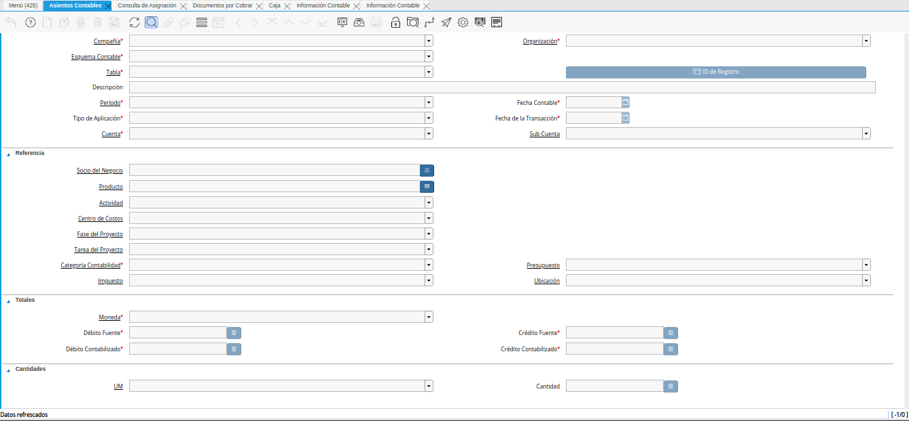
Imagen 16. Resultado del Proceso Re-Contabilizar Datos Contables